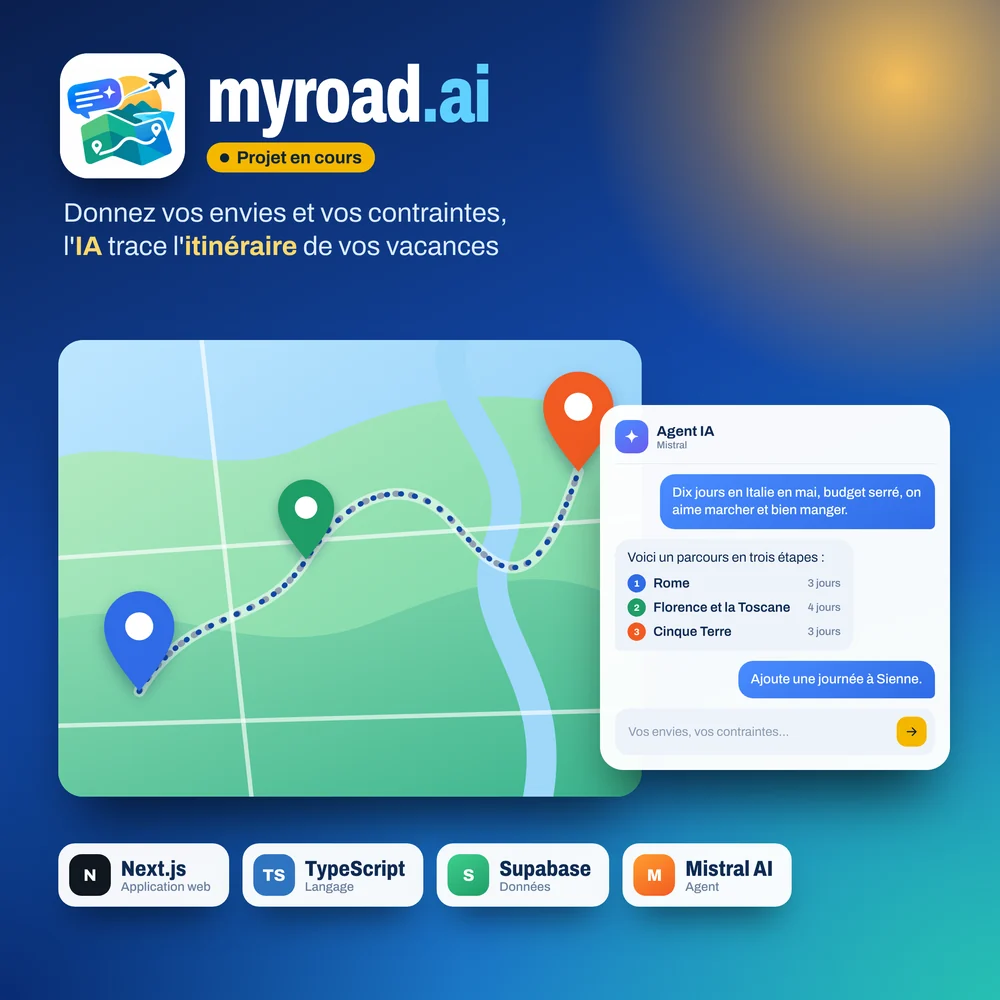

2026 en cours
MyRoad.ai
Un planificateur de voyage par IA, en cours de développement : vous indiquez vos contraintes et vos envies (dates, budget, rythme, centres d'intérêt), et un agent IA Mistral construit l'itinéraire de vos vacances. L'objectif est de tout réunir au même endroit, de la découverte à la réservation. Application web en Next.js et TypeScript, adossée à Supabase.
- Next.js
- TypeScript
- Supabase
- Mistral AI